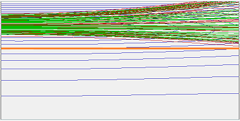
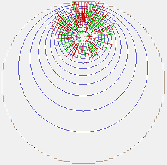

Purpose
This example calculates the trajectory and potentials of a high current beam through a conductive cylindrical pipe. It uses the Poisson solver (with piclib) and also compares results to just using the regular charge repulsion techniques. Unlike the charge repulsion techniques, which only accounts for particle-particle Coulombic interactions, the Poisson solver also properly takes into account the effect of the charged particles perturbing the distribution of electrode surface charges. For example, when a charged particle approaches an electrode surface, the surfaces charges on the electrode will rearrange in order to keep the potential over the surface constant and this in turn affects the fields and forces on the charged particles. This is referred to as "image charge effects" because the perturbation in the electric field is similar to as if a charge of equal magnitude (but opposite sign) is placed as a mirror image behind the electrode surface (see "method of images" [wikipedia]). One observable effect of this, which we see in the SIMION Poisson simulation, is that a beam traveling off-axis but parallel to the pipe will bend slightly toward the pipe. This effect can even be observed somewhat with the charge repulsion methods as well by introducing artificial image charges.


Other effects, such as Earth's magnetic field, the self magnetic field of the beam, and Earth's gravity are also examined.
Files in this demo
- pipe_beam_onaxis_poisson2d.* - Coaxial beam and pipe, with 2D cylindrical Poisson solve.
- pipe_beam_onaxis_repulsionbeam.* - Coaxial beam and pipe, with beam repulsion method (for comparison)
- pipe_beam_onaxis_repulsioncoulomb.* - Coaxial beam and pipe, with Coulomb repulsion method (for comparison)
- pipe_beam_offaxis_poisson3d.* - Beam off-axis inside pipe, with 3D Poisson solve
- pipe_beam_offaxis_repulsionbeam.* - Beam off-axis inside pipe, with beam repulsion method (for comparison) and a single particle approximating the image charge
- pipe_beam_offaxis_repulsionbeamimage.* - Beam off-axis inside pipe, with repulsion method and a user program that forces a second set of rays to follow the exact path of image charges (should be more accurate than the above)
- pipe_beam_bfieldearth.* - Examination of the effect of Earth's magnetic field on the beam.
- pipe_beam_bfieldself.* - Examination of the self-magnetic field generated by the beam itself on the beam.
- pipe_beam_gravity.* - Examination of the effect of gravity on the beam (almost always negligible).
- Geometry files:
- pipe2d.gem - pipe geometry with 2D cylindrical; used for non-Poisson examples above
- pipe2d_poisson.gem - same as pipe2d.gem but used for Poisson examples. This is kept separate from pipe2d.gem to avoid the Poisson solved PA accidentally being used in the non-Poisson examples.
- pipe3dz_poisson.gem - pipe geometry with 3D array (z-mirroring); used by poisson3d example above.
- pipe2d_imageprg.gem - same as pipe2d.gem but has extra surrounding space for containing image charge in repulsionbeamimage example above
- mag2d.gem - empty array to hold magnetic field; used by bfield examples above
For line charge in cylinder, the image charge location is Ri = R22 / R1.
Using this Example
- Load pipe_beam_onaxis_poisson2d.iob. Click Fly'm. A couple PIC/Poisson reruns are performed in "current" mode. Contour lines are plotted, and we see the effect the space-charge has on curving the otherwise straight contour lines (the PE view is also helpful). The space-charge density is also drawn using cross hash marks, which becomes smaller as the beam spreads out (larger marks indicate larger space-charge density). Examine both XY and ZY views.
- Now load the pipe_beam_offaxis_poisson3d.iob example. This is similar but the beam is off-axis. Since the space-charge distribution is now no longer cylindrically symmetric, the electric field cannot be expected to be cylindrically symmetric either, so we need a 3D array, although we are able to use Z mirroring. Click Fly'm. This takes a little bit longer to run since 3D Poisson solving is needed. Once the Fly'm has completed (PIC iterations done), notice in the XY and ZY views that there is a slight upward bias to the beam, which is due to the image charge effects discussed above and shown in the above screenshots.
- Load the pipe_beam_offaxis_repulsionbeam.iob example. This simulates the same system above but using the charge repulsion methods (beam repulsion) rather than the Poisson solver. Only a 2D PA is required because the 3D field of the beam is not incorporated back into the PA but is rather superimposed by SIMION on the 2D field only during particle tracing. Click Fly'm. Notice that the results are qualitatively similar. Moreover, we also see a slight upward bias, which exists only because an additional particle (blue) was added to approximate the image charge (set according to the "image charge location" equation noted above). You might also examine the other examples with "repulsion" in their name. pipe_beam_offaxis_repulsionbeamimage.iob more accurately represents the image charge (each particle has its own image charge). pipe_beam_onaxis_repulsioncoulomb.iob uses Coulombic repulsion. pipe_beam_onaxis_repulsionbeam.iob is an on-axis beam with beam repulsion and no image charge (compare to pipe_beam_onaxis_poisson2d.iob).
- The pipe_beam_bfieldearth.iob examines the effect of the Earth's magnetic field on the beam. This effect can be small but in some cases is significant, like the slow moving electrons (red) in this example. Magnetic shielding with mu metals (see magnets) or helmholtz coils can address this if it is a problem.
- The pipe_beam_gravity.iob examines the effect of Earth's gravity on the beam. Gravity is normally insignificant except for huge particles (e.g. blue 1E+8 u shown here), at least compared to other effects like Earth's magnetic field. This example is provided merely to examine other sources of error as well as demonstrate how some other force (e.g. gravity) can be incorporated into the simulation with a user program.
- The pipe_beam_bfieldself.lua examines how a high current beam itself generates a magnetic field and may in turn alter the particle trajectories. This field may be small. This mutual dependence between current density and magnetic field is analogous to the mutual dependence between space charge density and electric field explored by the PIC code (piclib) in the Poisson examples in this simulation, and it may be solved in a similar self-consistent manner. Here, however, the particle trajectories are fed into the Biot-Savart solver, and we only bother to do a single iteration for the purpose of plotting the magnetic field generated by the beam (in ZY view). It would also be possible, however, to feed the current densities into a Poisson solve of magnetic vector potential (see Example: Poisson for general pointers on the Poisson solver with magnetic vector potentials) rather than using the Biot-Savart solver. The Biot-Savart solver is analogous to the use of Coulomb's law in the charge repulsion methods. If anyone is interested, beam self magnetic field examples could be expanded, perhaps even incorporating into piclib.
See Also
- See also Example: Poisson.
- Example: poisson\pipe_with_charge - a similar system but using a static cylinder of charge rather than a beam
- Example: poisson\pierce_gun also uses PIC.
- Electric field of a 2D elliptical charge distribution inside a cylindrical conductor. M. A. Furman. Center for Beam Physics, Lawrence Berkeley National Laboratory. 2007. [link] - contains theoretical equations for fields like this (described more fully in pipe_with_charge).